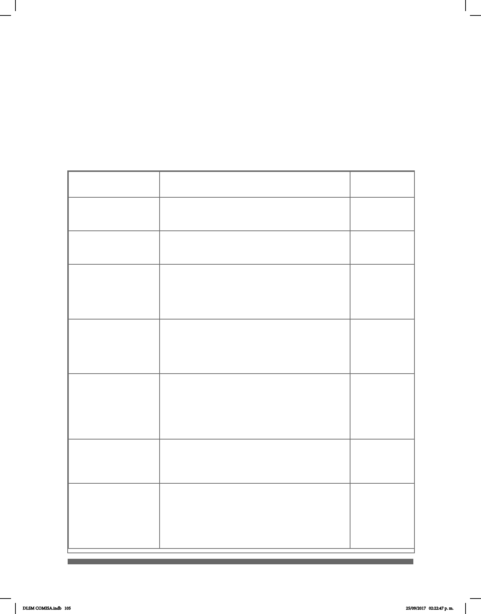

105
SOBRE LAS CONFIGURACIONES MANUALES
DEL DLSM - TOMO I
A continuación se presentan las siete conguraciones manuales (CM) a partir de las
cuales se construyó el Diccionario de Lengua de Señas Mexicana en la
Ciudad de México (DLSM). El orden de las CM se presenta de esta manera por su
frecuencia de uso en la Lengua de Señas Mexicana (LSM). Cada una contiene un número
determinado de entradas ordenadas alfabéticamente como se muestra en la lista siguiente:
Conguración
Manual (CM)
Descripción
Número de
entradas
B-Palma
El pulgar puede estar separado de la
palma de la mano o junto a ella; los otros dedos
permanecen siempre juntos.
243
5-Garra
A diferencia de B-Palma esta conguración
se articula con los cinco dedos separados y
extendidos o exionados.
115
A
En la dactilología hace referencia a la letra a
del abecedario del español. El pulgar puede ir
junto al dedo índice pero también puede estar
separado de él. Los otros cuatro dedos se
presentan exionados hacia la palma.
180
S
En la dactilología hace referencia a la letra s
del abecedario del español. Los dedos índice,
medio, anular y meñique se exionan hacia la
palma, mientras que el pulgar se apoya sobre
ellos.
137
L
En la dactilología hace referencia a la letra l
del abecedario del español. Los dedos índice y
pulgar van extendidos, aunque en las
variantes se exionan o se juntan. Los dedos
índice, anular y meñique siempre se presentan
exionados hacia la palma.
162
C
En la dactilología hace referencia a la letra c
del abecedario del español. Se caracteriza por
articularse con los dedos exionados en arco,
el pulgar siempre separado de los demás.
90
O
En la dactilología hace referencia a la letra o
del abecedario del español. La yema del dedo
pulgar toca la de los otros cuatro dedos,
los cuales, en las variantes, pueden estar
aplanados mientras el pulgar toca el dedo
medio.
83
DLSM COMISA.indb 105 25/09/2017 02:22:47 p. m.